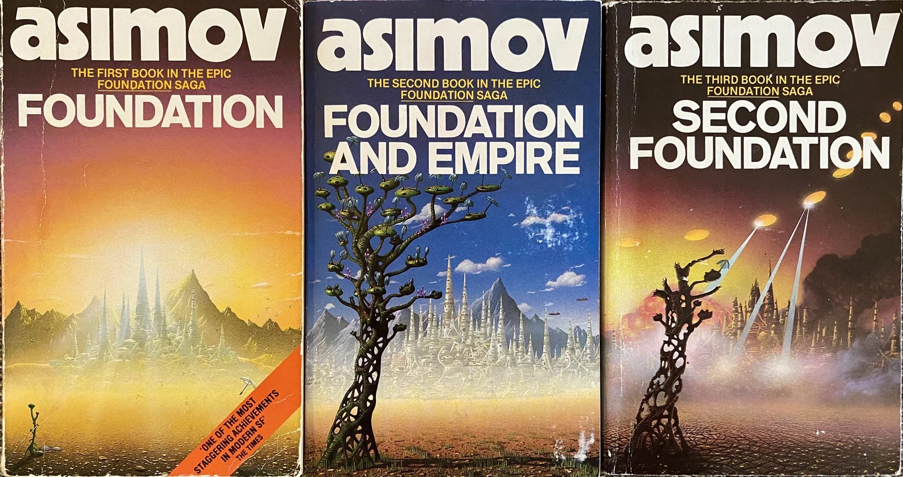

Isaac Asimov was born in Petrovichi, Russia in 1920. At 3 years old, his family imigrated to the United States of America, settling in Brooklyn, New York. Asimov attended Columbia University as a chemistry major. In 1948, he earned a degree in chemistry from the college too. That next year he was offered a position as a biochemistry instructor at Boston University of Medicine. He continued conducting research and teaching until the 1980s. Asimov dealt with serious medical issues after he had a heart attack in 1983. More complications piled up until his death in 1992 from heart and kidney failure.

Asimov began writing short sci-fi stories which appeared in a number of magazines in 1939.
By 1950, he had enough stories published that he compiled three of them into his first novel, Foundation. Foundation is set 11,000 years in the future. Humanity has colonized every corner of the galaxy with the Galactic Empire ruling over the galaxy.
The Empire had stood for over 6,000 years, but now a new science, called psychohistory and the man that created it, Hari Seldon, have calculated the fall of the Empire within the next 200 years.
The only way to preserve the knowledge of their current technology and shorten the coming period of medieval times in the galaxy, Seldon sends two colonies of people to opposite ends of the galaxy with the task of creating a Encyclopedia Galactica.
Through the calculations of psychohistory, the foundations will shorten the coming dark ages before the next great empire from 30,000 years to only 1,000. After its release, Asimov published two more novels to make the series a trilogy by 1953. Eventually, Asimov extended the series to three more novels and two prequel novels by 1983.
Asimov's Foundation series won the Hugo Award for Best All-Time Series
in 1966.